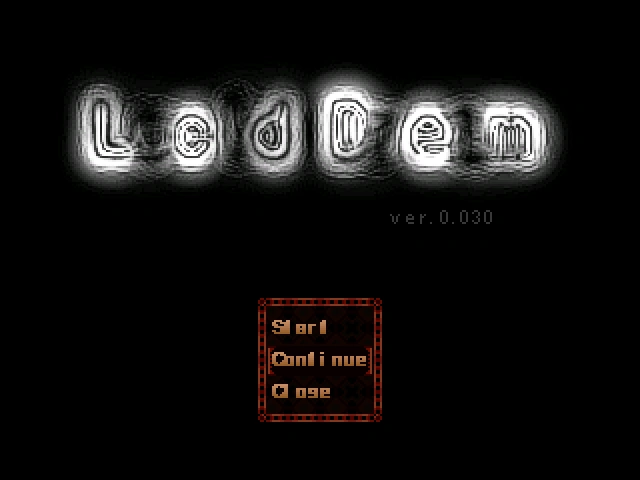

Tout au long de sa carrière, ころんば aura créé 2 jeux vidéos (dont 1 fangame et 1 original)
et il ne l'a pas fait avec n'importe quel éditeur de jeu car il utilisera celui de RPG Maker (ver. 2003)
LcdDem (レクヅデム ou れくづでむ en japonais, "rekuzudemu") est un fangame du jeu Yume Nikki crée le 26 Janvier 2010, où vous incarnez la protagoniste du jeu, "Chie", une jeune fille qui, en explorant le royaume de ses rêves, doit trouver et collecter des orbes et des effets cachés, qui lui donnent des capacités spéciales.

Ce fangame sera malheureusement par la suite effacé par Koronba comme indiqué sur le site internet officiel
http://koronba.husuma.com/
Mais grâce aux archives des internautes, vous pouvez toujours y jouer en ligne!
Jouer